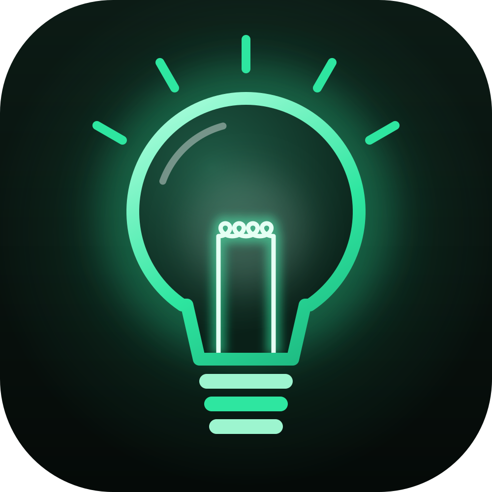

Lantai 6
Menu viralRasanya: 3 dari 5
Sama
?
Kamu
Pasti enak
Antrean: 11 orang
Efek ikut-ikutanBanerjee (1992), peraih Nobel Ekonomi 2019
Pejalan kaki yang ikut berhenti0%saat 1 orang menatap ke atas
10× lipat
+13–20%pesanan untuk menu berlabel terlarisCai, Chen & Fang (2009)
“
Antrean panjang itu bukti ramai, bukan bukti enak.
Cek dulu ulasan orang yang sudah makan, bukan panjang antreannya.
LOGIKA DUIT
Ekonomi sehari-hari, kok bisa?
Sumber EP 4
- Milgram, S., Bickman, L. & Berkowitz, L. (1969). Note on the Drawing Power of Crowds of Different Size. JPSP, 13(2), 79–82.
- Banerjee, A. V. (1992). A Simple Model of Herd Behavior. QJE, 107(3), 797–817.
- Cai, H., Chen, Y. & Fang, H. (2009). Observational Learning. American Economic Review, 99(3), 864–882.
Warung, menu, dan rating hanya ilustrasi.